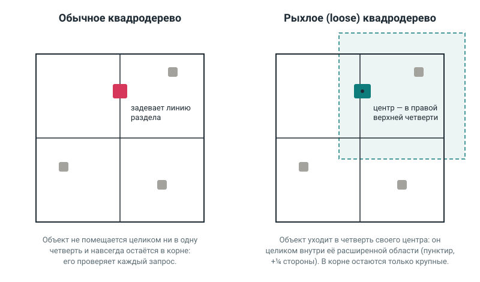

Курсовая: библиотека, которая быстро находит фигуры рядом с данной. Ведите мышью по полю — запрос следует за курсором. Код и описание — на GitHub, объяснение — в презентации.
Время зависит от компьютера, а число проверенных записей — нет. Попробуйте 50 000 объектов и обычное дерево. Запросы «выше» и «ниже» находят полмира: тут перебор бывает быстрее дерева, результат всё равно нужно выписать целиком.
Обычное квадродерево делит ячейку на четыре четверти. Объект на линии раздела не помещается ни в одну из них и остаётся наверху. Таких объектов тем больше, чем больше мир, а проверяет их почти каждый запрос.
В рыхлом дереве у каждой четверти есть запас в четверть её стороны. Объект спускается в ту четверть, где лежит его центр, если помещается в её область с запасом. Наверху остаются только действительно крупные объекты.
Поиск идёт в две фазы: дерево отбирает кандидатов по рамкам, а точная проверка формы отсеивает лишних — например, шар, у которого задет только угол рамки.
Фон страницы — игра «Жизнь» на том же индексе: каждая клетка — точка в дереве.
